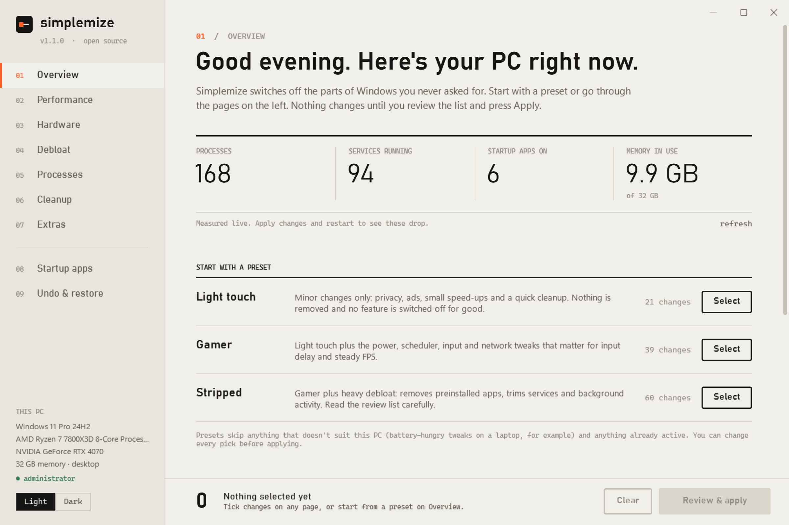
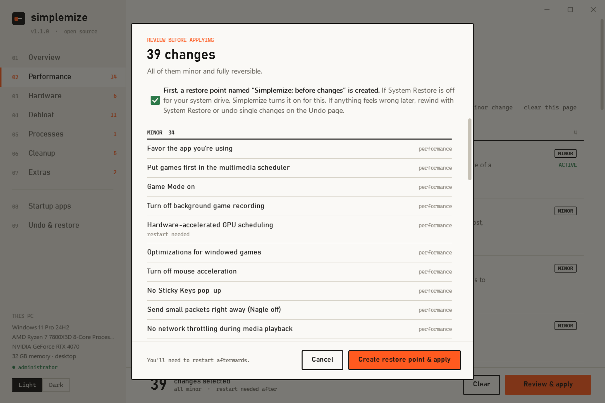
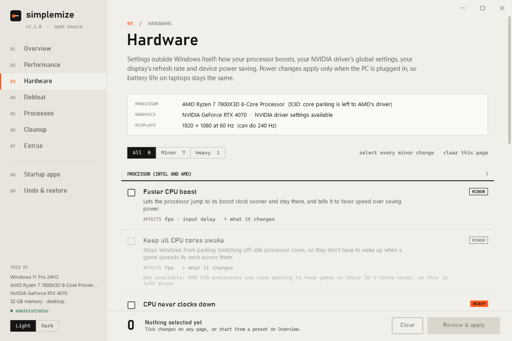
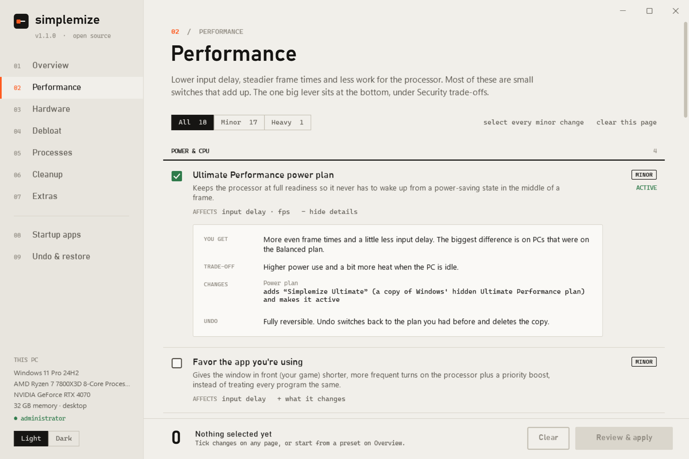

01 / Windows 10 & 11 optimizer
Switch off the parts of Windows you never asked for.
Simplemize is a small, free, open-source tool that debloats Windows, trims what runs in the background and tunes Windows, your processor, your NVIDIA driver and your display for lower input delay. It makes a restore point before it touches anything, and it tells you in plain words what every switch does.
irm https://manow17.github.io/simplemize/run.ps1 | iex
It downloads the latest release from GitHub, checks it against the published SHA-256 checksum, and starts it. Read the script first, it's short.

02 / How it works
Pick, read, apply. In that order.
Pick
Start from a preset (Light touch, Gamer or Stripped) or go page by page: Performance, Hardware, Debloat, Processes, Cleanup, Extras. Things already active on your PC are marked, so you don't apply them twice.
Read
Every change opens into a short sheet: what you get, what you give up, the exact registry values, services or tasks it touches, and how it's undone. Before applying, you see the whole list, heavy changes first.
Apply
Simplemize creates a System Restore point, saves the original value of every setting it changes, then applies. You get a line-by-line log, and a clear note if a restart is needed.

03 / Beyond Windows
Your processor, graphics driver and display, too.
The Hardware page reaches what Windows' own settings don't: how your Intel or AMD processor boosts and parks cores, NVIDIA's global driver settings (Prefer maximum performance, Low Latency Mode), displays left below their refresh rate, and USB and PCI Express power saving. Power changes only apply while the PC is plugged in. AMD Radeon settings can only be changed in AMD's own app, so Simplemize gives you a checklist instead of touching driver data.

04 / Minor or heavy
Every change wears a label.
A small, targeted change. Fully reversible, and no feature disappears. Think: Game Mode on, mouse acceleration off, no ads in Start, a faster menu.
Changes a lot. It switches a Windows feature off, removes an app, or lowers a protection. Think: search indexing off, preinstalled apps removed, Memory Integrity off. Read the trade-off first.
05 / Every change, in plain words
Here's everything it can do.
This list is generated from the app itself, so it always matches what Simplemize actually changes. Open any item to see the exact values.
06 / How to go back
Three ways back, from one setting to everything.
A Undo inside Simplemize
Simplemize keeps the original value of every setting it changed in C:\ProgramData\Simplemize\backup.json. The Undo & restore page lists each change with an Undo button, plus Undo everything. It puts back exactly what was there, not a guessed default.
B Rewind with System Restore
- Press Win + R, type
rstruiand press Enter. - If Windows suggests a restore point, select Choose a different restore point. Click Next.
- Pick Simplemize: before changes with the date you want, click Next, then Finish.
- The PC restarts and rewinds. It takes 5 to 20 minutes; don't switch it off. Your documents, photos and downloads aren't touched.
C If Windows won't start
- On the sign-in screen, hold Shift and click Restart. Can't get that far? Switch the PC off while Windows is loading, three times in a row, and recovery opens by itself.
- Choose Troubleshoot › Advanced options › System Restore.
- Pick Simplemize: before changes and follow the same steps.
One honest limit: removed apps can't be put back by Simplemize or by System Restore. They're free to reinstall from the Microsoft Store, and the Undo page links to each one.

07 / Straight talk
What it won't do.
Double your FPS
No settings tweak does. Simplemize removes what gets in a game's way: power saving, background work, recording hooks and scheduling defaults built for office PCs. The difference is largest on PCs that were never tuned. The one big lever, turning off Memory Integrity, is clearly marked as a security trade-off.
"Clean" your registry
Registry cleaners don't make Windows faster and can break things. Simplemize only changes documented settings, one named value at a time.
Touch your security
Windows Defender, the firewall and Windows security updates are left alone. The only protection it can lower is Memory Integrity, and only if you tick it yourself.
Wipe your caches blindly
It skips the shader cache and Prefetch on purpose: clearing them makes games stutter and apps load slower until Windows rebuilds them.
08 / Questions
Before you run it.
Windows says "Windows protected your PC". Is something wrong?
No. SmartScreen shows that for any app downloaded in a browser that isn't signed with a paid code-signing certificate and hasn't built up a download history yet. You have two options:
Skip it: press Win+X, open Terminal (or PowerShell) and paste irm https://manow17.github.io/simplemize/run.ps1 | iex. Files downloaded by PowerShell aren't tagged as "from the internet", so there's no pop-up. The script checks the file's SHA-256 before starting it.
Or click through it: click More info, then Run anyway.
Either way, Windows still asks for administrator rights (the blue or yellow prompt). That one is normal for any tool that changes system settings. If you'd rather check everything first, the full source is on GitHub and the exe is built from it with a single script.
Why does it ask for administrator rights?
Most of what it changes (services, system policies, restore points) needs them. If you say no, Simplemize still opens in read-only mode, so you can look around without changing anything.
Does it install anything or run in the background?
No. It's a single file. It doesn't add a service, a scheduled task or a startup entry, and it doesn't connect to the internet. When you close it, it's gone.
How do I remove Simplemize?
If you want your old settings back, use Undo everything first. Then delete Simplemize.exe and the folder C:\ProgramData\Simplemize.
Will it work on my laptop?
Yes. Simplemize notices when a PC runs on a battery and warns you about changes that cost battery life. Presets skip those automatically.
Which Windows versions does it support?
Windows 10 and Windows 11, Home and Pro. Changes that only exist on Windows 11 are marked and greyed out on Windows 10. It needs .NET Framework 4.8, which every up-to-date Windows 10 and 11 PC already has.
My antivirus flagged it.
Tools that change system settings sometimes trip heuristics, especially when they're new and unsigned. You can read every line it runs in the source. If in doubt, build it yourself with build.ps1.